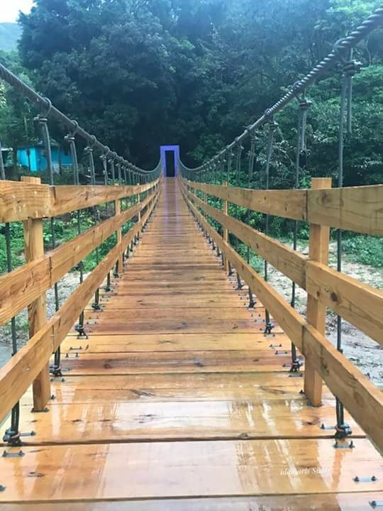
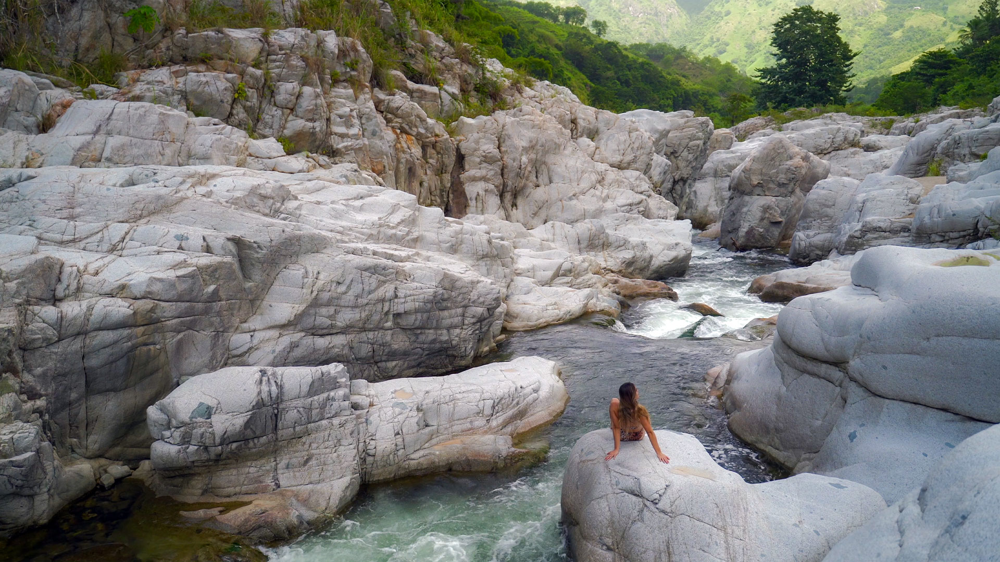
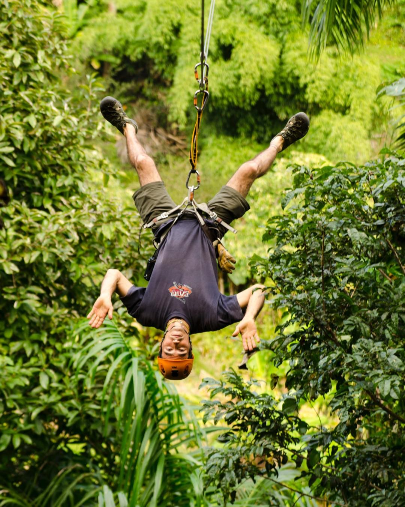

Puente de Hamaca de Utuado

La construcción del puente fue por la necesidad que había para esa comunidad llamada “El verde” que no tenía conexión con San José que es
la urbanización que da al otro lado del puente.
“La Hamaca” se convirtió en un emblema del barrio. La comunidad de “El Verde” tiene alrededor de 125 familias, que actualmente utilizan el puente
para tener acceso a la carretera 123.
Pueden visitar el Puente de Hamaca de Utuado en:
- Dirección: 77PV+RCH, Utuado, 00641
Cañón Blanco
Encontrarás esta joya escondida en la región montañosa central de Puerto Rico, específicamente en el pueblo de Utuado. Mágico, hermoso y majestuoso son solo algunas de las palabras que pueden usarse para describir a Cañón Blanco. Llegar a este lugar requiere un poco de caminata, pero una vez que llegues verás que valió la pena. Además de un hermoso paisaje, esté atento a los petroglifos indígenas grabados en algunas de las grandes rocas de la zona.
Pueden visitar el Cañón Blanco en:
- Dirección: Utuado 00664
Batey Adventures
Batey Zipline Adventure es una empresa familiar con más de diez años de experiencia en ecoturismo. Estamos ubicados en el Barrio Ángeles del Municipio de Utuado, justo frente al Parque Ceremonial Indígena de Caguana. Desde hace diez años, combinamos experiencias educativas con aventuras en la naturaleza como caminatas por el bosque, visitas a las cuevas y cavernas del río Tanamá y aventuras con más adrenalina como el rapel y los tours en tirolesa o canopy.
Pueden visitar Batey Adventures en:
Charco Los Morones
Encontrará Charco Los Morones en uno de los municipios más grandes de Puerto Rico: Utuado. Una vez en la zona del río, encontrarás encantadoras piscinas naturales, exuberante vegetación y el estado de ánimo tranquilo que se obtiene al estar rodeado por las montañas de la isla.
Pueden visitar el Charco Los Morones en:
- Dirección: 67MH+4CG, Utuado 00641